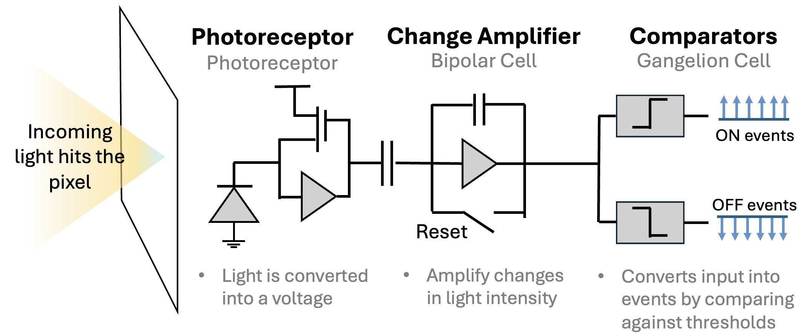
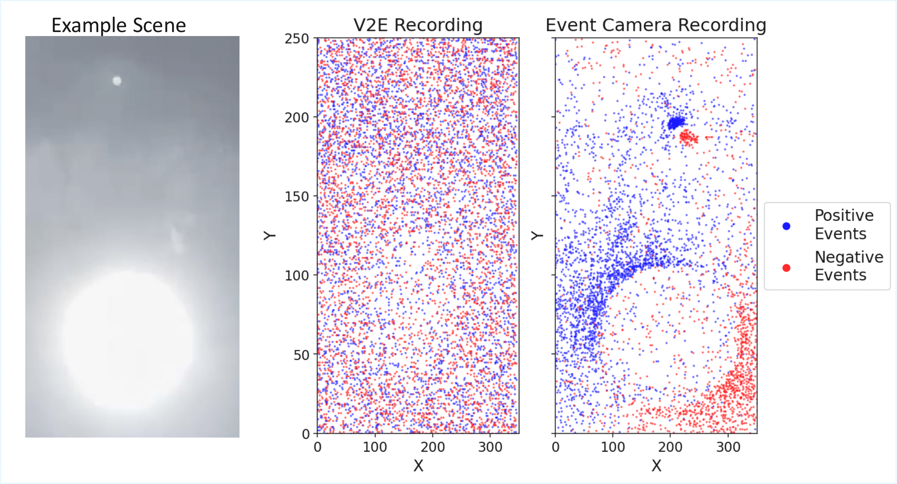

Abstract
Event cameras are increasingly being explored for space applications due to their high dynamic range and increased spatiotemporal resolution. Existing datasets in this application have focused on capturing low-light, sub-pixel space objects and Earth observation scenarios. There remains a notable gap in datasets tailored to high-illumination conditions, particularly those involving direct solar imaging. This work introduces a dataset of solar event recordings captured with an event camera in a controlled sun-simulator environment. The dataset is specifically designed to support research in sun sensing and stray light analysis for spacecraft attitude estimation applications. It includes raw event data, annotated sun centroid locations, object motion profiles, and secondary optical aberration artifacts. In addition to the dataset, we present a systematic methodology for estimating the sun vector, intended to serve as a benchmark for evaluating sun sensing approaches in this application. All data and code are open source to facilitate further study.
Motivation
Attitude sensors determine a spacecraft's orientation by sensing astronomical objects. Among attitude sensors, sun sensors are the most widely used due to their simplicity, low-power requirements, and the Sun's consistent visibility in space. Sun sensors estimate the direction and position of the sun relative to the spacecraft. Their working principle is shown in Figure 1.
Figure 1. Ideal single-aperture sensor operating principle.
The two sun angles \( \alpha \) and \( \beta \) represent the relative sun angle.
Figure adapted from
Herman (2025)
.
The performance of centroiding methods for sun sensing has plateaued due to limitations in spatial resolution, optical blur, and susceptibility to noise. These constraints limit the achievable accuracy of sun sensors with conventional CMOS detectors. To address these challenges, we propose the use of event-based cameras for sun sensing. We introduce a dataset and associated benchmark, Sun-E, to facilitate further work in this field.
What are event cameras?
Event-based vision is an alternative framework within visual sensing that pulls inspiration from the human visual system’s capability to detect and respond to motion changes in the environment. the vision system receives visual input asynchronously and transports this input to the visual cortex for processing. Cells in the retinal, composed of photoreceptors, bipolar cells, and ganglion cells, work together to detect changes in light intensity and motion. This biological system has inspired the development of event cameras, which operate on a similar principle.
Figure 2. Event cameras mimic the structure of retinal cells by using pixels that independently convert light into voltage signals, responding to changes in brightness detected at each pixel.
Events are read off a chip in the format (t,x,y,p) which includes the pixel's xy address on the pixel array, the polarity (p) of the change (ON or OFF) and a microsecond timestamp (t). Together, the thousands of pixels in an event camera represent a dynamic view of the scene. The asynchronous update of each pixel occurs at an exceptionally high temporal resolution, enabling these cameras to adeptly capture fast-moving objects and dynamic scenes without the motion blur typically associated with frame cameras. Another key benefit of this class of camera is its ability to measure light intensity differences. Similar to the human eye, the event camera detects changes on a logarithmic scale, rather than with absolute values. This allows it to handle a wide range of lighting conditions effectively, avoiding common issues like overexposure or underexposure encountered with traditional frame camera systems. This adaptability is particularly valuable in environments with challenging lighting conditions like space.

Figure 3. Side-by-side comparison of frame camera capture of a satellite detumbling (left), and an event camera capture (right).
What makes this dataset different??
Despite the growing interest in event-based vision for space applications, there exists a notable lack of publicly available datasets specifically tailored for sun sensing. This is a significant challenge to the development and evaluation of sun-sensing algorithms.

Figure 4. Sample Comparison between simulated event-based solar imagery generated using event simulator v2e and experimentally captured event-based data. The initial scene was captured outdoors and not in the laboratory set-up used to produce the Sun-E dataset. The cluster of events near the top of the Event Camera recording corresponds to a ghost optical artifact.
As illustrated by Figure 4, synthetic data diverges significantly from experimentally captured data. Synthetic event generators do not accurately model stray light artifacts within the scene. In this work, we address the broader gap in sun-sensing datasets by developing an experimental, high-fidelity dataset that captures realistic sunlight illumination and complex optical interactions.
The dataset consists of 9 scenes recorded with a fourth-generation event camera under varied sun angles, direction, and event sensor conditions. Each scene contains ground-truth metadata and auxiliary labels related to stray light analysis. Details about each scene are shown in the table below.
| Alignment | ID | T | f# | Ghosts | Flares | Direction | MER | Biases |
|---|---|---|---|---|---|---|---|---|
| Center | 1 | 60 | 5 | ✓ | ✓ | Left | 832.3 | default |
| 2 | 20 | 5 | × | ✓ | Down | 649.6 | default | |
| 3 | 30 | 5 | × | ✓ | Down | 654.0 | default | |
| 4 | 58 | 8 | ✓ | ✓ | Right | 1224.7 | default | |
| Upper | 5 | 58 | 5 | × | ✓ | Right | 750.4 | default |
| 6 | 55 | 5 | × | ✓ | Left | 699.1 | default | |
| Lower | 7 | 58 | 5 | × | ✓ | Right | 784.7 | default |
| 8 | 58 | 5 | × | ✓ | Left | 782.1 | default | |
| 9 | 58 | 5 | × | ✓ | Right | 802.2 | refractory |
In addition to the dataset, we provide a baseline methodology and evaluation protocol for event-based sun sensing.
How does our benchmark work?
Despite the growing interest in event-based vision for space applications, there exists a notable lack of publicly available datasets specifically tailored for sun sensing. This is a significant challenge to the development and evaluation of sun-sensing algorithms.
BibTeX
@article{YourPaperKey2024,
title={Sun-E: Dataset and Benchmark for Event-Based Sun Sensing },
author={Sydney Dolan and Alessandro Golkar},
year={2025},
url={https://sydneyid.github.io/sun_e_proj/}
}